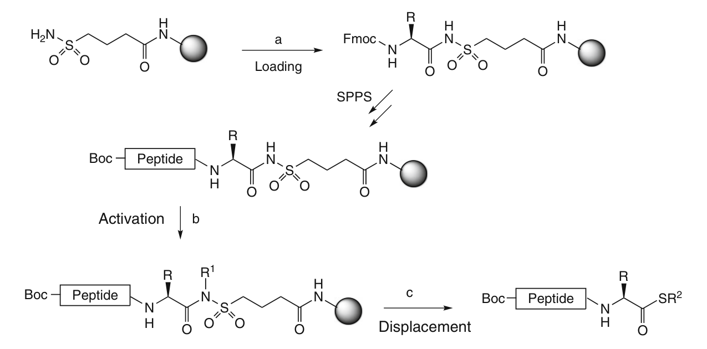
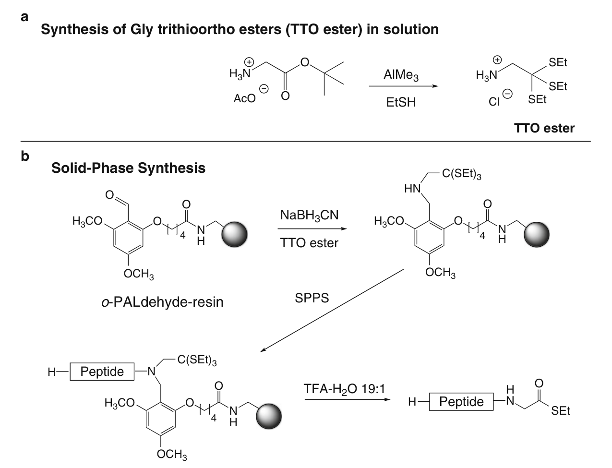

Chapter 8
Synthesis of C-Terminal Peptide Thioesters Using Fmoc-Based Solid-Phase Peptide Chemistry
基于 Fmoc 固相多肽化学合成 C 端多肽硫酯
Authors: Pernille Tofteng Shelton and Knud J. Jensen
Source: Methods in Molecular Biology, vol. 1047 (2013), pp. 119–129
本章提供了两种使用 Nα-Fmoc 保护氨基酸进行多肽硫酯 (peptide thioesters) 固相合成的实验方案。第一种方案基于所谓的 safety-catch linker (安全捕获连接臂)；第二种方案则依赖 backbone amide linker (BAL, 骨架酰胺连接臂)。
关键词：Thioesters（硫酯）、Safety-catch linker（安全捕获连接臂）、Backbone amide linker（骨架酰胺连接臂）、BAL
【要点总结】本章核心是两种 Fmoc-SPPS 合成多肽硫酯的策略：(1) Safety-Catch Linker (SCL) 策略——通过 Kenner 型 acylsulfonamide 连接臂，经烷基化激活和亲核取代释放全保护硫酯；(2) Backbone Amide Linker (BAL) 策略——利用 trithioortho ester (TTO) 将硫酯掩蔽为 sp³ 碳，通过骨架氮锚定，最终 TFA 裂解释放 C 端 Gly 硫酯。
C 端多肽硫酯 (C-terminal peptide thioesters) 在合成蛋白质化学中被广泛使用，尤其是用于 native chemical ligation (NCL, 自然化学连接) 和其他化学选择性反应 (chemoselective reactions)，这推动了对稳健合成策略的探索。
最初，多肽硫酯主要通过 Boc 保护的氨基酸进行固相多肽合成 (Boc-SPPS) 来制备 [1–3]（参见 Chapter 4）。然而，该技术需要专门的设备来处理用于从树脂上释放多肽的氢氟酸 (hydrofluoric acid, HF)，因此目前在许多实验室中并未使用。此外，HF 处理与许多翻译后修饰 (post-translational modifications) 不兼容，例如糖基化 (glycosylations) 或磷酸化 (phosphorylations) [4]。Boc-SPPS 在 Chapter 4 中有详细描述。
树脂结合的硫酯中，sp²-碳 (sp²-carbon) 在反复用哌啶 (piperidine) 处理时容易受到亲核攻击 (nucleophilic attack)；因此，在 Fmoc-SPPS 过程中通常无法保持硫酯的完整性。然而，已有改进的 Fmoc-SPPS 方法的报道，其中硫酯部分要么在 SPPS 过程中被掩蔽 (masked)，要么在最后一步中被引入。
最初，人们使用非亲核碱 (non-nucleophilic bases) 来脱除 Fmoc 基团 [5–7]。通过使用这些替代性脱保护试剂，硫酯不会在 Nα 脱保护过程中因氨解 (aminolysis) 而分解，硫酯得以保留。然而，使用这些改进的脱保护条件并未完全消除硫酯降解，该方法也未被广泛用于组装较长的多肽硫酯 [8]。
使用酸不稳定性 (acid-labile) 的 2-chlorotrityl resin (2-氯三苯甲基树脂) 合成全保护多肽 (fully protected peptides)，然后在溶液中将其转化为硫酯的方法已获得了良好的产率 [9, 10]。不幸的是，当 C 端残基被活化并转化为活性酯 (active ester) 再形成硫酯时，这种方法可能导致 C 端残基的差向异构化 (epimerization)。
文献中已描述了多种多肽硫酯合成策略，包括：使用芳基肼连接臂 (aryl hydrazine linker) [11]；N-acylurea 方法 [12, 13]；某些三官能 C 端残基（即 Lys、Glu、Gln、Asp 或 Asn，以及 Ser 或 Thr）的侧链锚定 (side-chain anchoring) [14, 15]；以及通过原位 O→S 酰基转移 (in situ O–S acyl shift) [16–18] 和 N→S 酰基转移 (N–S acyl shift) [19–21]获得硫酯中间体的方法。这些方法各自克服了 Fmoc 策略合成多肽硫酯的一些困难。不幸的是，其中许多方法并不具有普遍适用性，新的、更通用的方法仍然令人感兴趣。2009 年，本课题组发表了一种利用 Fmoc 化学合成硫酯的方法，该方法通过在树脂上形成焦谷氨酰亚胺 (pyroglutamyl imide) 结构，随后进行硫解 (thiolysis) 生成硫酯 [22]。
利用特殊连接臂 (special linkers) 合成多肽硫酯的策略已有报道，其中使用最广泛的是 safety-catch linker (SCL, 安全捕获连接臂)。在活化和亲核取代后，它可以在溶液中提供全保护的多肽硫酯 [23]（图 1）。它在 Fmoc-SPPS 中被普遍使用，也是本章的主要焦点。

图 1 SCL 策略合成多肽硫酯。(a) Fmoc-Aaa-OH, PyBOP, DIEA; (b) TMS-CHN₂ 或 ICH₂CN/DIEA; (c) HSR₂, NaSPh
【要点总结】引言核心问题：Fmoc-SPPS 中哌啶脱保护会降解硫酯。解决路线：(1) 非亲核碱脱 Fmoc——效果有限；(2) 全保护肽溶液转化——可能差向异构化；(3) 特殊连接臂策略——SCL 最通用；(4) BAL+TTO 策略——适用于 C 端 Gly。
此外，本章还包括使用 backbone amide linker (BAL) 策略形成 C 端硫酯的实验方案（参见 Chapter 9），该策略通过骨架氮 (backbone nitrogen) 锚定多肽，从而使 C 端游离以供修饰 [24]（图 2）。在合成过程中，硫酯被掩蔽为 trithioortho ester (TTO, 三硫代原酸酯)。该 BAL 策略仅限于合成具有 C 端 Gly 残基的多肽硫酯；然而，C 端 Gly 往往是理想的。
Safety-catch linker (SCL) 策略利用 Kenner 酰基磺酰胺连接臂 (Kenner's acylsulfonamide linker) 的改进版本 [23, 25–27]。脂肪族磺酰胺 (aliphatic sulfonamide) 已被证明优于芳族磺酰胺 (aryl sulfonamide)，这是因为脂肪族酰基磺酰胺阴离子增强了亲核性，这与其增强的碱性相关 [28]。3-羧基丙烷-磺酰胺连接臂 (3-carboxypropane-sulfonamide linker)在碱性和强亲核条件下是稳定的，但可以通过与 trimethylsilyl-diazomethane (TMS-重氮甲烷) 或 iodoacetonitrile (碘乙腈)反应生成 N-烷基酰基磺酰胺 (N-alkyl acylsulfonamide) 来激活。硫醇的亲核攻击生成硫酯，同时释放全保护的多肽硫酯，随后可以在溶液中进行侧链脱保护（图 1）。
通过改变取代步骤中的亲核试剂，该策略也可用于合成具有其他 C 端修饰的多肽，如酰胺 (amides) 或酯 (esters) [29]。通过 SCL 策略已制备了大量多肽硫酯，包括 24 残基的糖肽硫酯 (glycopeptide thioester) [4, 30]和磷酸肽 α-硫酯 (phosphopeptide α-thioesters) [31, 32] 等 [29]。
有两种试剂可用于通过烷基化激活酰基磺酰胺连接臂：iodoacetonitrile/DIEA 和 TMS-diazomethane，后者提供更高的产率 [23, 33]。随后的亲核取代已使用多种硫醇进行，其中 benzyl mercaptan (苄硫醇) 和 ethyl-3-mercaptopropionate (3-巯基丙酸乙酯) 最为常用。最初由 Pessi 等人推荐的 sodium thiophenolate (硫代苯酚钠) 仅在少数情况下使用，但在本实验室中，与最常用的硫醇相比，它提供了更高的产率 [23, 33]。
有人提出了一种 sulfamylbutyryl resin (磺酰氨基丁酰树脂) 的变体，其中连接臂与酸不稳定性 Rink Amide AM 树脂 (Rink Amide AM resin) 结合。这使得可以用 TFA 进行顺序裂解，便于更好地控制合成过程，特别是烷基化反应 [30, 34]。
第一个构建模块加载到 safety-catch 树脂上，最初报告给出 excellent 的产率（64–93%，除 Fmoc-Thr(OtBu)-OH 和 Fmoc-Pro-OH 外），只需一次 PyBOP 处理 [27]。为了最小化差向异构化 (epimerization)，在 −20 °C 下使用 PyBOP 偶联，反应时间 <8 h。然而， insufficient loading level (不足的加载量) 一直是个问题，已有替代偶联条件的建议，如使用 Fmoc 氨基酸氟化物 (Fmoc amino acid fluorides) [35]。幸运的是，如今预载的 safety-catch linker 树脂已有市售。
【要点总结】SCL 策略要点：(1) 基于 Kenner 酰基磺酰胺连接臂的改进版，脂肪族 > 芳族磺酰胺；(2) TMS-重氮甲烷活化效果优于碘乙腈；(3) 硫代苯酚钠作亲核试剂产率更高；(4) 改变亲核试剂可获酰胺或酯；(5) 预载树脂已商品化，避免了自行加载的低效率问题。
具有 C 端 Gly 硫酯的多肽可以通过 BAL 策略制备，其中 Gly 硫酯的 sp² 羰基碳 (sp² carbonyl carbon) 在多肽链组装过程中被掩蔽为 trithioortho (TTO) 酯的 sp³ 碳 (sp³ carbon)。关键的 TTO 衍生物通过在溶液中用 "Al(SEt)₃" 处理 Gly 酯来获得。所得的甘氨酸 TTO 酯，HCl·H₂NCH₂C(SEt)₃，随后通过 reductive amination (还原胺化) 锚定到树脂结合的三烷氧基苄基 (trialkoxybenzyl) BAL 上。在多肽链组装完成后，最终用 TFA-H₂O 处理可将 TTO 酯转化为硫酯，同时从 BAL 手柄上释放（图 2）。
这是一种合成具有 C 端 Gly 残基的多肽硫酯的通用方法；用于自然化学连接 (native chemical ligation) 的多肽硫酯通常纳入空间位阻较小的 C 端 Gly 残基。

图 2 BAL TTO 策略合成多肽硫酯。(a) 在溶液中合成 TTO 试剂；(b) 通过 BAL 手柄锚定 TTO 试剂
【要点总结】BAL TTO 策略要点：(1) 将 Gly 硫酯的 sp² C 掩蔽为 TTO 的 sp³ C，避免哌啶降解；(2) TTO 由 AlMe₃ + EtSH 处理 Gly 酯制备；(3) 通过还原胺化锚定到 o-PALdehyde 树脂；(4) 最终 TFA-H₂O (19:1) 同时完成 TTO→硫酯转化和树脂释放；(5) 限于 C 端 Gly，但 NCL 中 C 端 Gly 常用。
• 4-Sulfamylbutyryl AM NovaGel（加载量 0.67 mmol/g，Novabiochem by Merck Millipore）
• Fmoc- 和 Boc-保护的氨基酸
• 溶剂 (Solvents)：
• (a) Dichloromethane (DCM, 二氯甲烷)
• (b) N,N-Dimethylformamide (DMF, N,N-二甲基甲酰胺)
• (c) N-Methyl-2-pyrrolidinone (NMP, N-甲基-2-吡咯烷酮)
• (d) Methanol (MeOH, 甲醇)
• (e) Tetrahydrofuran (THF, 四氢呋喃)
• (f) Trifluoroacetic acid (TFA, 三氟乙酸)
• (g) Piperidine (哌啶)
• 偶联试剂 (Coupling reagents)：
• (a) Diisopropylcarbodiimide (DIC, 二异丙基碳二亚胺)
• (b) HBTU
• (c) COMU
• (d) HATU
• (e) 1-Hydroxybenzotriazole (HOBt, 1-羟基苯并三氮唑)
• (f) Ethyl(2-cyano-2-(hydroxyimino)acetate) (Oxyma)
• (g) PyBOP
• 其他试剂 (Other reagents)：
• (a) N,N-Diisopropylethylamine (DIEA, N,N-二异丙基乙胺)
• (b) Triethylsilane (TES, 三乙基硅烷)
• (c) 1 M TMS-CHN₂ in hexane-THF (1:1) (Sigma-Aldrich)
• Aminomethylated Tentagel resin（氨基甲基化 Tentagel 树脂，加载量 0.29 mmol/g，Rapp Polymere）
• o-PALdehyde: 5-(2-formyl-3,5-dimethoxyphenoxy)pentanoic acid（Peptides International）
• Fmoc- 和 Boc-保护的氨基酸
• Glycine trithioortho esters (甘氨酸三硫代原酸酯)：非商品化，可按照 Subheading 3.2.1 的方案合成 [24]
• Sodium cyanoborohydride (NaBH₃CN, 氰基硼氢化钠)
• 偶联试剂：DIC, HBTU, HOBt, Oxyma（见 Subheading 2.1）
• 溶剂：DMF, NMP, DCM, TFA, DIEA, piperidine（见 Subheading 2.1）
• Triethylsilane (TES, 三乙基硅烷)
• 微波仪器 (Microwave instrument)：Biotage Initiator，使用 Biotage 玻璃小瓶或其新型过滤玻璃小瓶（连接到 Initiator peptide workstation）
【要点总结】材料要点：SCL 策略需要 4-Sulfamylbutyryl AM NovaGel 树脂和 TMS-CHN₂；BAL TTO 策略需要 Tentagel 树脂、o-PALdehyde 连接臂和自制的 Gly TTO 酯。两种策略共用标准 Fmoc-SPPS 的偶联试剂和溶剂。BAL 策略额外需要微波仪器 (Biotage Initiator)。
在以下部分中，将描述两种多肽硫酯合成策略：(1) safety-catch linker (SCL) 策略和 (2) 使用 trithioortho ester 构建模块的backbone amide linker (BAL) 策略。
Synthesis of C-Terminal Peptide Thioesters by Kenner's Safety-Catch Linker Strategy
Loading of the First Amino Acid to the Safety-Catch Linker
注：此初始步骤可以通过从 Merck/Novabiochem 等不同厂商购买预载树脂 (preloaded resin) 来省略。
1. 将 4-sulfamylbutyryl AM NovaGel 树脂（加载量 0.67 mmol/g；0.1 mmol 规模）放入装有聚乙烯过滤器的 10 mL 聚丙烯注射器中。
2. 加入 Fmoc-Aaa-OH（5 当量）、DIEA（10 当量）和 2.5 mL DCM，振摇树脂 20 分钟。
3. 使用冰浴将混合物冷却至 −18 °C。
4. 当树脂混合物充分冷却后，在充分混合的同时加入 PyBOP（5 当量）。
5. 然后将树脂混合物置于冰浴上保持低温，放置过夜（约 15–20 小时）。
6. 通过过滤去除过量试剂。
7. 用 DCM（3 × 2 mL）、NMP（3 × 2 mL）和 DCM（3 × 2 mL）洗涤树脂。
8. 取少量树脂干燥后进行 Fmoc 定量（参见 Notes 1 和 2）。
9. 如果树脂加载量低于 30%，则重复步骤 2–5。测定的树脂加载量用于后续化学计算。
Chain Elongation Using Standard SPPS Fmoc Chemistry
在将第一个氨基酸初始加载到 SCL 树脂后，剩余的多肽组装非常适合自动化多肽合成。标准的多肽链组装方案在 Chapter 2 中有描述。
1. 标准 Fmoc 化学，手动或自动化（Chapter 2）。
2. N 端氨基酸以 Nα-Boc 保护衍生物的形式引入。
Alkylation and Thioesterification
1. 将树脂（0.05 mmol）放入 10 mL 注射器中，用 THF（2 × 2 mL）洗涤。
2. 向树脂中加入 THF（5 mL）并溶胀 1 小时。
3. 通过过滤排干树脂，加入 1 M TMS-CHN₂ 的 hexane-THF（1:1）溶液（2.5 mL）。反应混合物振摇 3 小时后，通过过滤去除过量试剂。
4. 用 THF（2 × 2 mL）、DCM（2 × 2 mL）和 DMF（2 × 2 mL）洗涤树脂。
5. 向树脂中加入 ethyl 3-mercaptopropionate（3-巯基丙酸乙酯，50 当量）、sodium thiophenolate（硫代苯酚钠，1 当量）和 DMF（最终浓度 1 M），充分混合。
6. 在振摇下反应 18–24 小时（参见 Note 3）。
7. 将 DMF-多肽滤液收集到圆底烧瓶中。用 DMF（1 × 2 mL）和 DCM（2 × 2 mL）洗涤树脂，收集洗涤液并与滤液合并（参见 Note 4）。
8. 通过旋蒸去除溶剂（DMF、DCM 和硫醇）。为去除微量 DMF，将圆底烧瓶在真空下放置过夜（参见 Note 5）。
Deprotection and Analysis
1. 向圆底烧瓶中加入 TFA-H₂O-TES（95:2.5:2.5）（3 mL），放置 3 小时。
2. 将合并的多肽/TFA 溶液转移至 15 mL 离心管中，用 N₂ 吹除 TFA。
3. 当仅剩少量 TFA 时，用乙醚 (diethyl ether)（8 mL）沉淀多肽，离心后去除乙醚。
4. 将多肽风干约 30 分钟，然后溶解于 H₂O-CH₃CN 中，用 LC-MS 分析并冻干 (lyophilized)（参见 Note 6）。
【要点总结】SCL 策略操作要点：(1) 第一个氨基酸加载：−18°C 过夜 PyBOP 偶联以减少差向异构化；(2) 烷基化激活：TMS-CHN₂ 处理 3 h；(3) 硫酯化：巯基丙酸乙酯 + 硫代苯酚钠，DMF 中 18–24 h；(4) 脱保护：TFA-H₂O-TES (95:2.5:2.5) 裂解 3 h；(5) 全程注意：N 端用 Boc 保护（非 Fmoc），因为 Fmoc 在此阶段已不需要。
The BAL Strategy Using the Trithioortho Ester Building Block
Synthesis of Trithioortho Esters in Solution
通过 BAL 策略合成 C 端甘氨酸多肽硫酯需要 trithioortho (TTO) 酯构建模块。该构建模块目前非商品化，因此其合成方法描述如下。以下化学过程与本书专门的 BAL 章节（Chapter 9）中描述的化学过程几乎相同。
1. 在圆底烧瓶中将干燥 DCM（50 mL）在氩气下冷却至 0 °C。
2. 小心地逐滴加入 AlMe₃ 的庚烷溶液 (AlMe₃ in heptane)（26 mmol）到烧瓶中，放置 15 分钟。
3. 将 H-Gly-OtBu, AcOH（2.6 mmol）溶解在 DCM（10 mL）中，加入烧瓶。
4. 去除冷却，在室温下搅拌 18 小时。
5. 转移至大锥形瓶中，在搅拌下用冰（50 mL）淬灭过量试剂。
6. 在分液漏斗中去除水相泡沫/水层。
7. 用 1% HCl（4 × 50 mL）萃取有机相。
8. 合并水相，加入固体 NaOH 直至 pH ~11。
9. 用 DCM（3 × 50 mL）萃取碱性溶液。
10. 合并有机相，用 Na₂SO₃ 干燥。
11. 去除 DCM，得到黄色油状物。
12. 将黄色油状物溶解在 1% 盐酸水溶液中，冻干得到白色固体粉末。
13. 产率约 40–50%。NMR 和 MS 分析结果见 Brask et al. [24]。
Anchoring of the o-PALdehyde Linker
1. 将 TG 树脂放入带过滤器的微波小瓶中（或普通聚苯乙烯注射器加过滤器）（参见 Note 7），用 DCM 溶胀 20–30 分钟。然后用 DMF 洗涤树脂。
2. 在单独的容器中（如 15 mL Falcon 管），称取 HBTU（1.8 当量）、HOBt（2 当量）（参见 Note 8）、o-PALdehyde（2 当量）和 DIEA（4 当量），加入 DMF 至总浓度 0.2 M。对于 0.1 mmol 规模，约需 2 mL DMF。
3. 将 DMF 混合物加入树脂中，用隔膜密封小瓶，然后在微波中 75 °C 加热 10 分钟。过滤树脂以去除过量偶联试剂。
4. 重复步骤 2–3。
5. 然后用 DMF（×3）和 MeOH（×3）洗涤树脂。
Anchoring of the First Residue: Reductive Amination
1. 在微波小瓶中，将 o-PALdehyde TG 树脂悬浮在 MeOH:AcOH（99:1）中（0.1 mmol 规模约 7 mL）（参见 Note 9）。
2. 加入 NH₂CH₂C(SEt)₃·HCl（5 当量）和 NaBH₃CN（5 当量），用隔膜密封小瓶。
3. 在微波中 60 °C 加热 10 分钟，然后彻底洗涤树脂：MeOH（×3）、DMF（×3）、MeOH（×1）。
4. 重复步骤 2 和 3，省略最后的 MeOH 洗涤。
Anchoring of the Second Residue: Acylation of Secondary Amine
1. 用 DCM 洗涤树脂。
2. 在 Falcon 管中称取 Fmoc 氨基酸（10 当量），加入 DMF（0.1 mmol 规模约 700 μL）。然后加入 DCM（0.1 mmol 规模约 6.3 mL）和 DIC（5 当量）。预激活 10 分钟（参见 Notes 10 和 11）。
3. 将氨基酸溶液加入树脂中（在微波小瓶中），用隔膜密封。
4. 在微波中 60 °C 反应 10 分钟。通过过滤去除过量偶联液。
5. 重复步骤 2–4。
6. 用 DMF（×3）和 DCM（×3）洗涤树脂。
Fmoc Quantification to Determine Loading of Dipeptide for Further Synthesis
为确定二肽树脂 (dipeptidyl resin) 的质量，进行 Fmoc 定量（参见 Chapter 2）。
Chain Elongation Using Standard SPPS: Suggestion for Automated Chemistry
在树脂上合成第一个二肽后，剩余的多肽组装非常适合自动化合成。Fmoc-SPPS 有许多不同的方法，更详细的描述参见 Chapter 2。
Release of Peptide in Solution
1. 用 DCM 洗涤树脂，真空干燥 1–2 小时。
2. 加入 TFA-H₂O（19:1）（0.1 mmol 规模约 10 mL）。反应 3 小时（参见 Note 12）。
3. 过滤树脂，收集 TFA-多肽混合物。用 TFA 和 DCM 洗涤树脂，收集滤液。
4. 可在 N₂ 气流下去除 TFA 和 DCM，然后用乙醚沉淀多肽，离心后去除乙醚。乙醚处理重复一次。
5. 将多肽风干约 30 分钟，然后溶解于 H₂O-CH₃CN 中，用 LC-MS 分析并冻干。
【要点总结】BAL TTO 策略操作要点：(1) TTO 合成：AlMe₃ + EtSH → "Al(SEt)₃"，再与 Gly 酯反应，产率 40-50%；(2) o-PALdehyde 偶联到 TG 树脂：微波 75°C, 10 min × 2；(3) 第一残基 (Gly-TTO)：还原胺化 (NaBH₃CN)，微波 60°C；(4) 第二残基：DIC 预激活偶联，微波 60°C；(5) 链延伸：标准 Fmoc-SPPS 自动化；(6) 释放：TFA-H₂O (19:1), 3 h，TTO 同时转化为硫酯。
Note 1：Fmoc 定量 (Fmoc quantification) 是一种利用 UV 吸收测定树脂上 Fmoc 量的技术（详见 Chapter 2）。这可以给出树脂加载量的良好估计值。
Note 2：不同氨基酸在 4-sulfamylbutyryl AM NovaGel 树脂上的加载效率不同。例如，Fmoc-Ala-OH 经一次 PyBOP 处理后加载到约 50% 的原始树脂加载量，而 Fmoc-Val-OH 或 Fmoc-Ile-OH 仅分别加载到 36% 和 26%。
Note 3：硫醇的加入会产生恶臭的溶液。
Note 4：请记住，对于这种特定类型的合成，多肽是通过加入硫醇释放的，因此多肽此时存在于 DMF 混合物中。
Note 5：可以在此阶段分析多肽，但全保护多肽的溶解性可能存在问题。此外，ESI-MS 对全保护多肽的 MS 分析并不总是可行的。
Note 6：水溶液中的多肽硫酯易于水解 (hydrolysis)。尽可能将多肽硫酯以冻干粉末形式保存。
Note 7：这些方案设计用于带过滤器的微波玻璃小瓶（Biotage Initiator peptide workstation）。如果没有此设备，可以使用带过滤器的普通聚苯乙烯注射器代替。然后在每次微波辅助反应之前将树脂转移至微波小瓶。
Note 8：由于航空运输限制，HOBt 的获取已受限。替代方案是使用 Oxyma 作为添加剂。或者，可以完全不使用添加剂，仅使用 HBTU。此外，也可以使用其他偶联试剂如 HATU 或 COMU。
Note 9：如果在开放式微波小瓶系统中进行反应，则改用 DMF:AcOH（99:1）。
Note 10：如果在开放式微波小瓶系统中进行反应，则用 DCE (1,2-二氯乙烷) 代替 DCM。
Note 11：某些氨基酸可能难以溶解在 DCM 中。因此加入 10% DMF。不要使用超过 10% 的 DMF，否则会对反应结果产生负面影响。
Note 12：在反应过程中，手动搅拌含 TFA 裂解混合物的树脂 3–5 次。
【要点总结】实验注意事项精华：(1) 不同氨基酸 SCL 加载效率差异大 (Ala 50%, Val 36%, Ile 26%)；(2) 硫醇有恶臭，操作需通风；(3) 全保护肽 ESI-MS 分析困难；(4) 硫酯易水解，以冻干粉保存；(5) HOBt 获取受限时可用 Oxyma 替代；(6) 微波反应中用 DCE 替代 DCM（开放体系）；(7) 氨基酸难溶时加 ≤10% DMF 助溶。
1. Hojo H, Aimoto S (1991) Polypeptide synthesis using the S-Alkyl thioester of a partially protected peptide segment. Synthesis of the DNA-binding domain of c-Myb protein (142-193)-NH₂. Bull Chem Soc Jpn 64:111
2. Camarero JA, Cotton GJ, Adeva A, Muir TW (1998) Chemical ligation of unprotected peptides directly from a solid support. J Pept Res 51:303–316
3. Schnölzer M, Alewood P, Jones A, Alewood D, Kent SBH (1992) In situ neutralization in Boc-chemistry solid phase peptide synthesis. Int J Pept Protein Res 40:180–193
4. Shin Y, Winans KA, Backes BJ, Kent SBH, Ellman JA, Bertozzi CR (1999) Fmoc-based synthesis of peptide-α thioesters: application to the total chemical synthesis of a glycoprotein by native chemical ligation. J Am Chem Soc 121:11684–11689
5. Li X, Kawakami T, Aimoto S (1998) Direct preparation of peptide thioesters using an Fmoc solid-phase method. Tetrahedron Lett 39:8669–8672
6. Bu X, Xie G, Law CW, Guo Z (2002) An improved deblocking agent for direct Fmoc solid-phase synthesis of peptide thioesters. Tetrahedron Lett 43:2419–2422
7. Clippingdale AB, Barrow CJ, Wade JD (2000) Peptide thioester preparation by Fmoc solid phase peptide synthesis for use in native ligation. J Pept Sci 6:225–234
8. Alsina J, Albericio F (2003) Solid-phase synthesis of C-terminal modified peptides. Biopolymers 71:454–477
9. Futaki S, Sogawa K, Maruyama J, Asahara T, Niwa M (1997) Preparation of peptide thioesters using Fmoc-solid-phase peptide synthesis and its application to the construction of a template-assembled synthetic protein (TASP). Tetrahedron Lett 38:6237–6240
10. von Eggelkraut-Gottanka R, Klose A, Beck-Sickinger AG, Beyermann M (2003) Peptide α thioester formation using standard Fmoc-chemistry. Tetrahedron Lett 44:3551–3554
11. Camarero J, Hackel BJ, de Yoreo JJ, Mitchell AR (2004) Fmoc-based synthesis of peptide α-thioesters using an aryl hydrazine support. J Org Chem 69:4145–4151
12. Blanco-Canosa JB, Dawson PE (2008) An efficient Fmoc-SPPS approach for the generation of thioester peptide precursors for use in native chemical ligation. Angew Chem Int Ed 47:6851–6855
13. Mahto SK, Howard CJ, Shimko JC, Ottesen JJ (2011) A reversible protection strategy to improve Fmoc-SPPS of peptide thioesters by the N-acylurea approach. Chembiochem 12:2488–2494
14. Wang P, Miranda LP (2005) Fmoc-protein synthesis: preparation of peptide thioesters using a side-chain anchoring strategy. Int J Pept Res Ther 11:117–123
15. Li L, Wang P (2007) Transfer allyl esters to thioesters in solid phase condition: synthesis of peptide thioesters by Fmoc chemistry. Tetrahedron Lett 48:29–32
16. Botti P, Villain M, Manganiello S, Gaertner H (2004) Native chemical ligation through in situ O to S acyl shift. Org Lett 6:4861–4864
17. Warren JD, Miller JS, Keding SJ, Danishefsky SJ (2004) Toward fully synthetic glycoproteins by ultimately convergent routes: a solution to a long-standing problem. J Am Chem Soc 126:6576–6578
18. Tofteng AP, Jensen KJ, Hoeg-Jensen T (2007) Peptide dithiodiethanol esters for in situ generation of thioesters for use in native ligation. Tetrahedron Lett 48:2105–2107
19. Ollivier N, Behr J-B, El-Mahdi O, Blanpain A, Melnyk O (2005) Fmoc solid-phase synthesis of peptide thioesters using an intramolecular N,S-acyl shift. Org Lett 7:2647–2650
20. Kawakami T, Sumida M, Nakamura K, Vorherr T, Aimoto S (2005) Peptide thioester preparation based on an N-S acyl shift reaction mediated by a thiol ligation auxiliary. Tetrahedron Lett 46:8805–8807
21. Nakamura K, Mori H, Kawakami T, Hojo H, Nakahara Y, Aimoto S (2007) Peptide thioester synthesis via an auxiliary-mediated N-S Acyl shift reaction in solution. Int J Pept Res Ther 13:191–202
22. Tofteng AP, Sørensen KK, Conde-Frieboes KW, Hoeg-Jensen T, Jensen KJ (2009) Fmoc solid-phase synthesis of C-terminal peptide thioesters by formation of a backbone pyroglutamyl imide moiety. Angew Chem Int Ed 48:7411–7414
23. Ingenito R, Bianchi E, Fattori D, Pessi A (1999) Solid phase synthesis of peptide C-terminal thioesters by Fmoc/t-Bu chemistry. J Am Chem Soc 121:11369
24. Brask J, Albericio F, Jensen KJ (2003) Fmoc solid-phase synthesis of peptide thioesters by masking as trithioortho esters. Org Lett 5:2951–2953
25. Kenner GW, McDermott JR, Sheppard RC (1971) J Chem Soc Chem Commun:636–637
26. Backes BJ, Virgilio AA, Ellman JA (1996) Activation method to prepare a highly reactive acylsulfonamide "safety catch" linker for solid phase synthesis. J Am Chem Soc 116:3055–3056
27. Backes BJ, Ellman JA (1999) An alkanesulfonamide "Safety-Catch" linker for solid-phase synthesis. J Org Chem 64:2322–2330
28. Bordwell FG (1988) Equilibrium acidities in dimethyl sulfoxide solutions. Acc Chem Res 21:456–463
29. Heidler P, Link A (2005) N-Acyl-N-alkylsulfonamide anchors derived from Kenner's safety-catch linker: powerful tools in bioorganic and medicinal chemistry. Bioorg Med Chem 13:585–599
30. Mezzato S, Schaffrath M, Unverzagt C (2005) An orthogonal double-linker resin facilitates the efficient solid-phase synthesis of complex type N-glycopeptide thioesters suitable for native chemical ligation. Angew Chem Int Ed 44:1650–1654
31. Flavell RR, Huse M, Goger M, Trester-Zedlitz M, Kuriyan J, Muir TW (2002) Efficient semi-synthesis of a tetraphosphorylated analogue of the type I TGFβ receptor. Org Lett 4:165–168
32. Huse M, Holford MN, Kuriyan J, Muir TW (2000) Semisynthesis of hyperphosphorylated type I TGF receptor: addressing the mechanism of kinase activation. J Am Chem Soc 122:8337
33. Biancalana S, Hudson D, Songster MA, Thompson SA (2001) Fmoc chemistry compatible thio-ligation assembly of proteins. Lett Pept Sci 7:291–297
34. Burlina F, Morris C, Behrendt R, White P, Offer J (2012) Simplifying native chemical ligation with an N-acylsulfonamide linker. Chem Commun 48:2579–2581
35. Ingenito R, Dreznjak D, Guffler S, Wenschuh H (2002) Efficient loading of sulfonamide safety-catch linkers by Fmoc amino acids fluorides. Org Lett 4:1187–1188